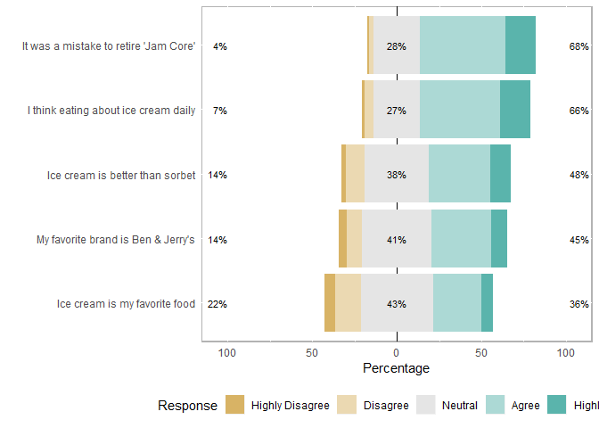

Data Vis for Likert Questions
Laura Mudge
2019-09-12
Source Tutorial:
I used this tutorial as a guide. Here is a boiled down version if you want quick and dirty graphs. The tutorial has a much more eloquent way to group questions (first you must save some attributes separately): http://reganmian.net/blog/2013/10/02/likert-graphs-in-r-embedding-metadata-for-easier-plotting/
Setup
knitr::opts_chunk$set(echo = TRUE)
library(rmarkdown)
library(tidyverse) # for all things data wrangling
library(likert) # for creating a likert plot
library(kableExtra) # make nice looking output tablesFunctions
Note: I found these functions somewhere on the world wide web… when I find them again I will cite my source!
# This function will be used to store likert questions into separate groups:
likert_store_groups <- function(db, groups) {
attr(db, "likert.groups") <- groups
db
}
# This function is helpful to plot likert questions based on the groups you defined using the above function
plot_likert_groups <- function(db, all=F, groups=NA, ...) {
attrgroups <- attr(db, "likert.groups")
if(is.null(attrgroups)) {
stop("You have not stored any groups using likert_store_groups")
}
if(all) {
groups <- names(attrgroups)
}
if(all(is.na(groups))) {
stop("You have not specified a group name using groups=, or all=F")
}
for(e in groups) {
group <- attrgroups[[e]]
ligroup <- likert(db[,group], ...)
print(plot(ligroup) + ggtitle(names(attrgroups[e])) )
}
}
# Function to round all the numbers in a df:
round_df <- function(df, digits = 3) {
nums <- vapply(df, is.numeric, FUN.VALUE = logical(1))
df[,nums] <- round(df[,nums], digits = digits)
(df)
}Load Data
What’s in the dataset?
* survey = the survey number (ie. each questionnaire that was handed in was numbered 1-300)
* cluster = which management cluster respondents live in: North, Central, South
* age = age of respondent
* Q1-Q5 = column name is the question number, each cell represents what likert score a respondent gave for that question: 1-5
# Load the dataset in it's entirety:
df <- read_csv("C:/github/sample_code/sample_data/surveyQ.csv")## Parsed with column specification:
## cols(
## survey_n = col_double(),
## cluster = col_character(),
## age = col_double(),
## Q1 = col_double(),
## Q2 = col_double(),
## Q3 = col_double(),
## Q4 = col_double(),
## Q5 = col_double()
## )head(df)## # A tibble: 6 x 8
## survey_n cluster age Q1 Q2 Q3 Q4 Q5
## <dbl> <chr> <dbl> <dbl> <dbl> <dbl> <dbl> <dbl>
## 1 1 N 50 2 4 3 4 4
## 2 2 N 39 4 3 3 4 4
## 3 3 N 37 5 5 5 5 3
## 4 4 N 53 5 5 4 4 3
## 5 5 N 48 4 5 3 4 2
## 6 6 N 42 4 5 5 5 5Split-Apply-Combine Here I’m using the “split-apply-combine” strategy, but there’s other ways to accomplish this. Basically I want to the variables (columns) related to survey questions into ordered factors.
* Split = separate the likert scale questions from other variables (eg age, gender)
* Apply = Apply a function to change numerical likert responses to ordered factors
* Combine = Put the likert questions & other variables back together
.
.
Note: you can call on the intermediary dataframe “items” later on when you want to refer ONLY to the likert item data (and not other data such as gender, age, etc.)
# split - separate likert questions, important they are saved as data.frame object
items <- as.data.frame(df[, 4:8])
# apply - apply any functions/loops to split data.
# 1: Create a vector of the text descriptions of likert choices 1-5
choices = c("Highly Disagree", "Disagree", "Neutral", "Agree", "Highly Agree")
# 2: Run for loop over likert data to change "1" -> "highly disagree", etc
for(i in 1:ncol(items)) {
items[,i] = factor(items[,i], levels=1:5, labels=choices, ordered=TRUE)
}
# combine - put the data back together
df <- bind_cols(df[, 1:3], items)
head(df)## # A tibble: 6 x 8
## survey_n cluster age Q1 Q2 Q3 Q4 Q5
## <dbl> <chr> <dbl> <ord> <ord> <ord> <ord> <ord>
## 1 1 N 50 Disagree Agree Neutral Agree Agree
## 2 2 N 39 Agree Neutral Neutral Agree Agree
## 3 3 N 37 Highly Ag~ Highly A~ Highly A~ Highly A~ Neutral
## 4 4 N 53 Highly Ag~ Highly A~ Agree Agree Neutral
## 5 5 N 48 Agree Highly A~ Neutral Agree Disagree
## 6 6 N 42 Agree Highly A~ Highly A~ Highly A~ Highly A~# df= full dataset
# items = dataset with likert questions/responses as ordered factorsGet your data ready for graphing
Rename columns Change column names to be whatever you want the text to read in the plots.
# Rename colums with Q# to descriptive questions:
df <- df %>%
rename("Ice cream is my favorite food" = Q1,
"I think eating about ice cream daily" = Q2,
"My favorite brand is Ben & Jerry's" = Q3,
"It was a mistake to retire 'Jam Core'" = Q4,
"Ice cream is better than sorbet" = Q5)
# save df specifically, otherwise R tries to address it as a "tibble" which doesn't work correctly with the next set of code:
df <- as.data.frame(df)
head(df)## survey_n cluster age Ice cream is my favorite food
## 1 1 N 50 Disagree
## 2 2 N 39 Agree
## 3 3 N 37 Highly Agree
## 4 4 N 53 Highly Agree
## 5 5 N 48 Agree
## 6 6 N 42 Agree
## I think eating about ice cream daily My favorite brand is Ben & Jerry's
## 1 Agree Neutral
## 2 Neutral Neutral
## 3 Highly Agree Highly Agree
## 4 Highly Agree Agree
## 5 Highly Agree Neutral
## 6 Highly Agree Highly Agree
## It was a mistake to retire 'Jam Core' Ice cream is better than sorbet
## 1 Agree Agree
## 2 Agree Agree
## 3 Highly Agree Neutral
## 4 Agree Neutral
## 5 Agree Disagree
## 6 Highly Agree Highly Agree## Note I repeat this here on items, probably can use lapply or something to avoid repeat code:
items <- items %>%
rename("Ice cream is my favorite food" = Q1,
"I think eating about ice cream daily" = Q2,
"My favorite brand is Ben & Jerry's" = Q3,
"It was a mistake to retire 'Jam Core'" = Q4,
"Ice cream is better than sorbet" = Q5)Make a plot showing the distribution of responses
One line of code creates a basic plot! But there’s a lot to improve on…
# make sure you have loaded the likert package: i like to save my plot as an object, but you don't have to. I also subsetted the columns with the questions we want to plot:
plot<- plot(likert(items))
plot
Wrap question text
use “wrap=” in the plot call to wrap the column name text (ie our questions)
plot<- plot(likert(items), wrap= 20)
plotAdd a title:
- If you’re not sure what your final title will be, save it as an object (eg “title1”) and call “title1” in the code. As you play around with title names, you only have to change the text once (in the line where you save the object)
# Make a title: it can be useful to keep this as a separate object, that way if you change it later you only need to edit the text once (here) because the plot code below will call whatever is saved as "title1"
title1 <- "Perceptions of Ice Cream"
# add that title to your plot from the chunk above:
final_plot <- plot + ggtitle(title1)
final_plotPlot by a grouping variable
Here’s an example of plotting responses based on a grouping variable such as gender, where someone lives etc. This should be a categorical variable. In this example I will plot based on which location (variable = cluster) respondents live in. The possible choices here are N=North, S= South, or C= Central. To see those full written out you’ll have to revalue the data (recommend doing that earlier on when you first load in your .csv file)
# Could probably substitute "items" for df[ 4,8] but this will help you keep straight where you are pulling data from:
cluster_plot <- plot(likert(df[,4:8], grouping=df$cluster)) + ggtitle(title1)
cluster_plotSave your plot
I prefer cowplot to save plots because it creates publication quality figures (300dpi).
*Will have to play with the aspect ratio to get the entire image in:
cowplot::save_plot("basic_likert_plot.png", final_plot,
ncol = 1, # we're saving a grid plot of 1 column
nrow = 1, # and 1 rows
base_aspect_ratio = 2.3
)Make a summary table of response percentages:
You can call the summary on likert(items) if you just want a print out. If it’s for a presentation I recommend using the kable_extra package to make it pretttttty.
# regular output
summary(likert(items))## Item low neutral high
## 4 It was a mistake to retire 'Jam Core' 3.819444 27.77778 68.40278
## 2 I think eating about ice cream daily 7.291667 27.08333 65.62500
## 5 Ice cream is better than sorbet 13.541667 38.19444 48.26389
## 3 My favorite brand is Ben & Jerry's 13.888889 41.31944 44.79167
## 1 Ice cream is my favorite food 21.527778 42.70833 35.76389
## mean sd
## 4 3.815972 0.7946830
## 2 3.746528 0.8765162
## 5 3.444444 0.9279086
## 3 3.354167 0.9552259
## 1 3.149306 0.9745541Here’s a prettier version of the table. Here we saved the summary ouput as a df; used the round_df function to round all the percentages; and used functions in the kable package to make a neat, condensed table.
# to reduce repeating code you can save the summary output as an object.
items_sum <- summary(likert(items))
items_sum## Item low neutral high
## 4 It was a mistake to retire 'Jam Core' 3.819444 27.77778 68.40278
## 2 I think eating about ice cream daily 7.291667 27.08333 65.62500
## 5 Ice cream is better than sorbet 13.541667 38.19444 48.26389
## 3 My favorite brand is Ben & Jerry's 13.888889 41.31944 44.79167
## 1 Ice cream is my favorite food 21.527778 42.70833 35.76389
## mean sd
## 4 3.815972 0.7946830
## 2 3.746528 0.8765162
## 5 3.444444 0.9279086
## 3 3.354167 0.9552259
## 1 3.149306 0.9745541# Round the numbers on the dataframe, then use kable to format the table:
round_df(items_sum, digits= 2) %>%
kable(caption="Summary Statistics of Ice Cream Preferences") %>%
kable_styling(bootstrap_options= c("condensed", "bordered"), full_width= F)| Item | low | neutral | high | mean | sd | |
|---|---|---|---|---|---|---|
| 4 | It was a mistake to retire ‘Jam Core’ | 3.82 | 27.78 | 68.40 | 3.82 | 0.79 |
| 2 | I think eating about ice cream daily | 7.29 | 27.08 | 65.62 | 3.75 | 0.88 |
| 5 | Ice cream is better than sorbet | 13.54 | 38.19 | 48.26 | 3.44 | 0.93 |
| 3 | My favorite brand is Ben & Jerry’s | 13.89 | 41.32 | 44.79 | 3.35 | 0.96 |
| 1 | Ice cream is my favorite food | 21.53 | 42.71 | 35.76 | 3.15 | 0.97 |
Plot questions/responses based on question groups
This is a messier than the tutorial above, but workable! This may be useful if you have a lot of questions and want to group them in different ways. Maybe questions 1-2 relate to perceptions about topic A and questiosn 3-5 relate to perceptions on topic B. This allows us to group similar questions together but keep them on the same plot.
Define your groups
Save an object called “groups”. Pseudo-code looks like this:
groups <- list(“group1” = c(“Q1”, Q2), “group2” = c(“Q3”, Q4))
# save an object called "groups" This will be a LIST of each group (the name in "") and
groups <- list(
"General"=c("Ice cream is my favorite food",
"I think eating about ice cream daily",
"Ice cream is better than sorbet"),
"Specific"=c("My favorite brand is Ben & Jerry's",
"It was a mistake to retire 'Jam Core'"))
groups## $General
## [1] "Ice cream is my favorite food"
## [2] "I think eating about ice cream daily"
## [3] "Ice cream is better than sorbet"
##
## $Specific
## [1] "My favorite brand is Ben & Jerry's"
## [2] "It was a mistake to retire 'Jam Core'"Store the group names with the likert dataset.
This can be useful if you just want to specify one or two groups to plot or to plot all groups, for example. Make sure you have run the function code from above!
items_by_groups <- likert_store_groups(db= items, groups=groups)Plot your groups
You can plot all groups at once: (Note you’ll have to scroll left and right in R studio to see all the plots come up)
plot_likert_groups(items_by_groups, all=T) #plots all 3 separately
Or you can just pick one group to plot
plot_likert_groups(items_by_groups, groups="General") #if want to plot one at a time